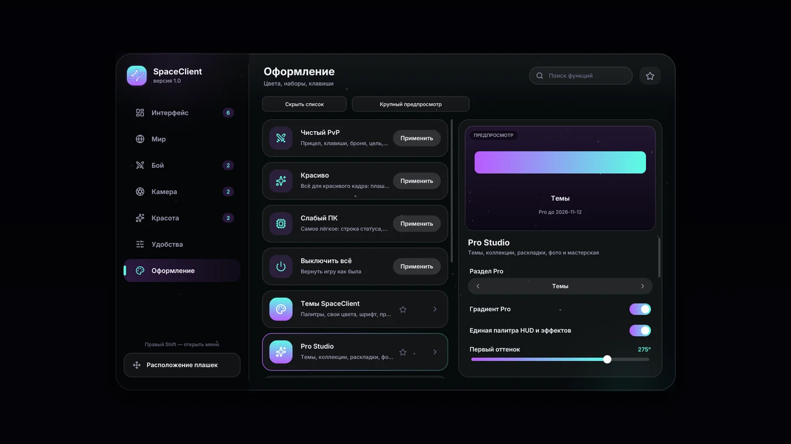

Твой мир.
Твой почерк.
Знакомый Minecraft. Новое ощущение.
Визуалы, интерфейс и детали, в которых — ты.
Java 1.21.11 Windows x64

в твой стиль.
Новый взгляд на игру.
С твоим участием.
Игра узнаваемая.
Ощущения — твои.
Собери своё оформление из деталей.
Начни с того, на что смотришь каждый день.
Больше свободы
для твоего стиля.
Pro Studio — пространство для оформления.
Темы, коллекции, раскладки и фоны меню.
- Своя палитра и градиенты
- Единые цвета HUD и эффектов
- Готовые сочетания для нового настроения
Оплата пока недоступна. Сообщим здесь, когда подписку можно будет оформить.
Пока познакомиться с AlphaТвой следующий
запуск — другой.
Попробуй SpaceVisuals Alpha на своём ПК.
Это тестовая версия: отдельные функции ещё могут меняться.
Акция с подарком Pro начнётся после запуска сервера аккаунтов. Скачивание этой версии сайта пока не участвует в акции.
Контрольная сумма SHA-256Распакуй архив
Сохрани клиент в отдельную папку на компьютере.
Запусти SpaceClient
Открой папку SpaceClient и запусти SpaceClient.exe.
Найди свой стиль
Начни с оформления, затем настрой интерфейс и камеру под себя.
Перед первым запуском.
Для какой версии Minecraft подходит клиент?
Для Minecraft Java 1.21.11 на Windows x64. Сборку Alpha можно скачать выше.
Что означает Alpha?
Это ранняя тестовая версия. Оформление и функции развиваются, поэтому возможны ошибки и изменения между обновлениями.
Можно ли уже купить Pro?
Пока нет: платёжный сервис ещё не подключён. Заявленная стоимость — 100 ₽ в месяц. На этой странице оплата не принимается.
Нужен ли аккаунт сайта для скачивания?
Нет, архив Alpha доступен по кнопке скачивания. Публичный сервер аккаунтов пока готовится. Локальный вход доступен при запуске серверной версии сайта.